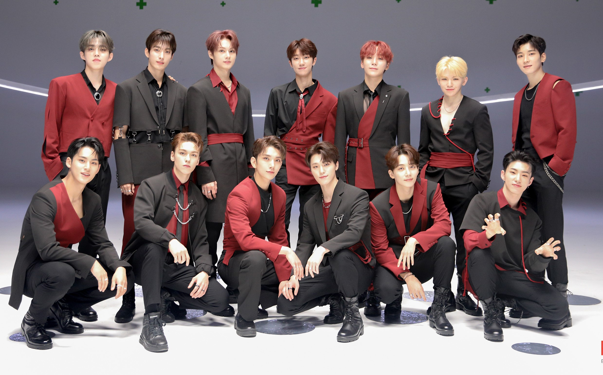

My Loves

My recent and forever group stan- Seventeen ⋆｡ﾟ☁︎｡⋆｡ ﾟ☾ ﾟ｡⋆
"Carats even if you face really tough times, I hope you don’t get intimidated and keep going. Seventeen is cheering you on"
-Jeonghan
Juliah Beon
Mother & A teacher
I love you <3
My beloved mother, Juliah
My mother's name is, Juliah Binti Mohamed Beon. She was born in 1970 and now she is 54 years old. She is a MUET teacher in SMK Datuk Haji Ahmad Badawi, Kepala Batas. She just recently changed to the school. Before this, she teach at SMK Dato' Bentara Luar Batu Pahat, Johor. She is a lovely mother and sometimes she can be childish because she is the last child among her siblings. She has the same hobby as me which is reading novels. Julie Garwood and Christene Feehan are her favorite authors. But recently, she's been into games like clearing blocks or number matches. She's into K-drama and K-pop too, BTS is her favorite group. One of her favorite K-dramas is Winter Sonata.
My first group stan- The Boyz ‚úÆ ‚ãÜ ÀöÔΩ°ñ¶π ‚ãÜÔΩ°¬∞‚ú©
"When you feel like you are alone, look around because there are those who are willing to help. Don't walk away before opening the door, but take a chance and start again." - Jacob Bae :3